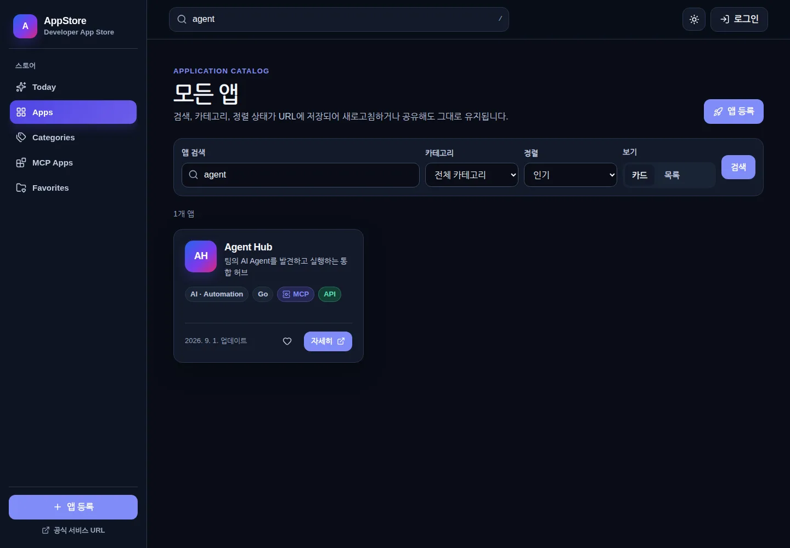
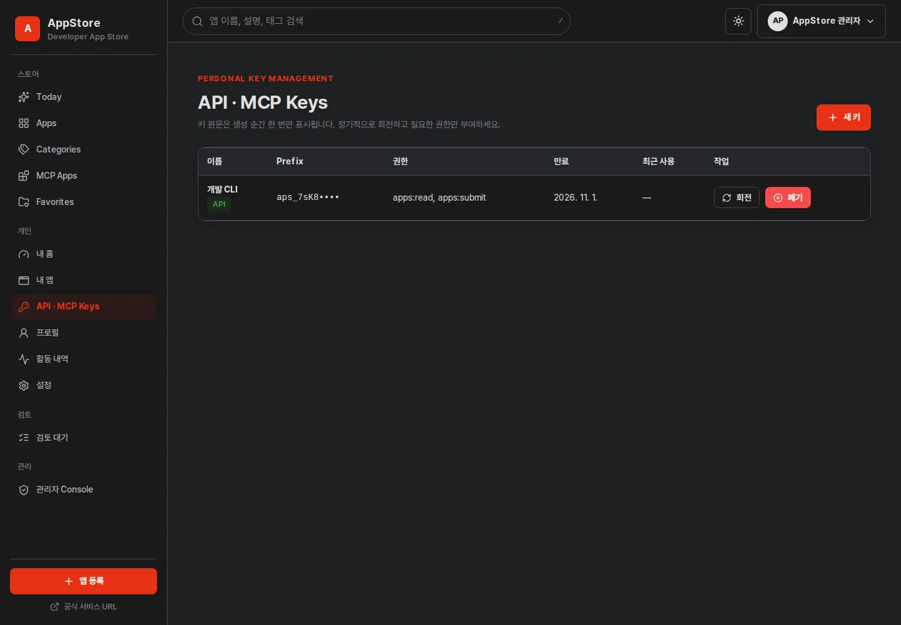

1. 접근 정책
AppStore는 URL을 인증 경계로 사용합니다. 브라우저 새로고침이나 주소 직접 입력 후에도 같은 메뉴와 필터가 유지됩니다.
| 영역 | 로그인 | 대표 경로 |
|---|---|---|
| 앱 탐색·검색·상세 | 불필요 | /apps, /apps/:slug |
| 즐겨찾기 | 불필요, 현재 브라우저에 저장 | /favorites |
| 앱 등록·내 앱·개인 Key | SSO 필요 | /submit, /my/* |
| 검토 | SSO + Reviewer 권한 | /review |
| 서비스 관리 | SSO + Admin 권한 | /admin/* |
2. 탐색과 검색
- Today 또는 Apps를 엽니다.
Today에는 추천·트렌딩 앱, Apps에는 전체 공개 카탈로그가 표시됩니다. - 검색어와 필터를 선택합니다.
검색어, 카테고리, 언어, MCP 지원, 정렬과 페이지가 URL query에 기록됩니다. - 앱 카드를 엽니다.
설명, 버전, 기술 정보, API·MCP 지원 여부와 관리자가 승인한 서비스 접속 URL을 확인합니다. - 즐겨찾기를 선택합니다.
비로그인 즐겨찾기는 현재 브라우저의 Local Storage에 보관되므로 브라우저 데이터를 삭제하면 함께 사라집니다.
{kind=link}

3. SSO 로그인
앱 등록, 내 페이지 또는 권한이 필요한 기능을 선택하면 로그인 안내 화면이 열립니다. 화면 하단에서 서비스 버전을 확인할 수 있습니다.
- 회사 계정으로 로그인을 선택합니다.
- Keycloak에서 조직 계정으로 인증합니다.
- 인증이 끝나면 처음 요청했던 경로로 돌아옵니다. 예를 들어 앱 등록에서 시작했다면
/submit으로 복귀합니다.
4. 앱 등록과 수정
+ 앱 등록에서 이름, slug, 요약, 상세 설명, 아이콘, 서비스 URL, 카테고리와 공개 범위를 입력합니다. Git 저장소 링크는 관리하거나 노출하지 않습니다.
등록 전 확인
- 서비스 URL이 사용자가 접근할 수 있는 조직 내부 주소인지 확인합니다.
- 설명에는 대상 사용자, 핵심 기능, 사용 전제조건을 적습니다.
- 아이콘과 스크린샷에는 개인정보, token, 내부 비밀번호를 포함하지 않습니다.
- MCP 또는 API를 지원하면 실제 제공 범위와 권한 요구를 선택합니다.
내가 등록한 앱은 /my/apps에서 수정합니다. 소유자 또는 관리자만 수정·삭제할 수 있습니다.
5. 검토·승인 상태 이해하기
관리자가 승인 기능을 설정하지 않았다면 등록 즉시 게시됩니다. 승인 기능이 켜진 조직에서만 다음 상태가 나타납니다.
| 상태 | 의미 | 할 일 |
|---|---|---|
| 게시됨 | 공개 카탈로그에 노출됨 | 서비스 URL과 설명을 최신으로 유지 |
| 검토 대기 | Reviewer 또는 팀장 판단 대기 | 필요하면 담당팀에 검토 요청 |
| 반려 | 수정이 필요한 사유가 등록됨 | 반려 사유를 반영하고 다시 제출 |
| 초안 | 아직 제출되지 않음 | 필수 필드를 완료한 뒤 제출 |
6. 개인화 영역
프로필 메뉴와 /my는 서비스 관리자 메뉴와 분리되어 있습니다. 내 프로필, 내가 등록한 앱, 내 즐겨찾기, API Key, MCP Key와 활동 내역을 확인합니다.
프로필 컨텍스트 메뉴 하단에는 AppStore v버전이 표시됩니다. 지원 요청 전 이 버전과 화면 오류의 Request ID를 함께 기록하세요.
7. 개인 API·MCP Key
{kind=link}

새 Key 발급
/my/keys에서 새 Key를 선택합니다.- 알아보기 쉬운 이름, 만료일과 필요한 최소 권한 또는 권한 템플릿을 선택합니다.
- 생성 직후 한 번 표시되는 원문을 승인된 비밀 저장소로 옮깁니다.
- 화면을 닫기 전에 저장 여부를 확인합니다. 서버는 원문을 복원할 수 없습니다.
회전과 폐기
회전하면 새 Key가 즉시 생성되고 구 Key는 관리자가 정한 Grace Period 동안만 유효합니다. 클라이언트 설정을 새 Key로 변경해 시험한 다음 구 Key를 조기 폐기할 수 있습니다. 유출이 의심되면 Grace Period를 기다리지 말고 즉시 폐기하세요.
Authorization header와 조직 비밀 저장소를 사용하세요.8. API, MCP와 AI 사용
REST API
관리자가 API를 활성화한 경우 /api/v1을 사용합니다. 공개 조회는 정책에 따라 익명일 수 있으며, 변경 요청에는 필요한 permission을 가진 개인 Key가 필요합니다.
MCP
MCP endpoint는 /mcp입니다. 보이는 tool은 익명·인증·관리자 권한에 따라 다릅니다. Key에 mcp:read 또는 mcp:execute 권한이 없다면 실행 tool이 표시되지 않습니다.
AI Streaming
AI 응답은 기본적으로 SSE streaming됩니다. 중지 버튼이나 페이지 이동으로 요청을 취소하면 브라우저의 AbortController와 Go context를 통해 upstream 요청도 취소됩니다. 연결이 끊기면 표시된 오류와 Request ID를 기록하세요.
9. 문제 해결
| 현상 | 확인 |
|---|---|
| 앱 등록 후 바로 보이지 않음 | /my/apps에서 검토 대기 또는 반려 상태인지 확인 |
| 403 Forbidden | 로그인 계정의 역할과 Key 권한이 작업에 맞는지 관리자에게 확인 |
| SSO 후 원래 화면으로 돌아오지 않음 | 새 탭 대신 같은 탭에서 재시도하고 Request ID 전달 |
| 새로고침 후 메뉴가 다름 | 주소의 route/query가 유지되는지 확인하고 브라우저 주소를 함께 신고 |
| AI 응답이 중단됨 | Provider 상태, timeout, 모델 token 제한과 오류 event 확인 |
White Screen 대신 오류 안내가 표시되어야 합니다. 지원 요청에는 발생 시각, URL, 서비스 버전, Request ID를 포함하고 token이나 비밀번호는 제외하세요.